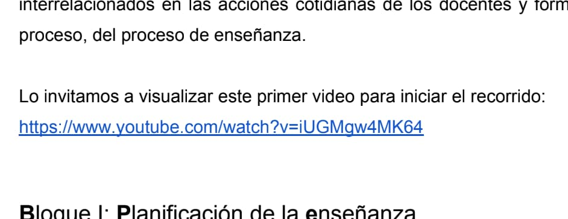
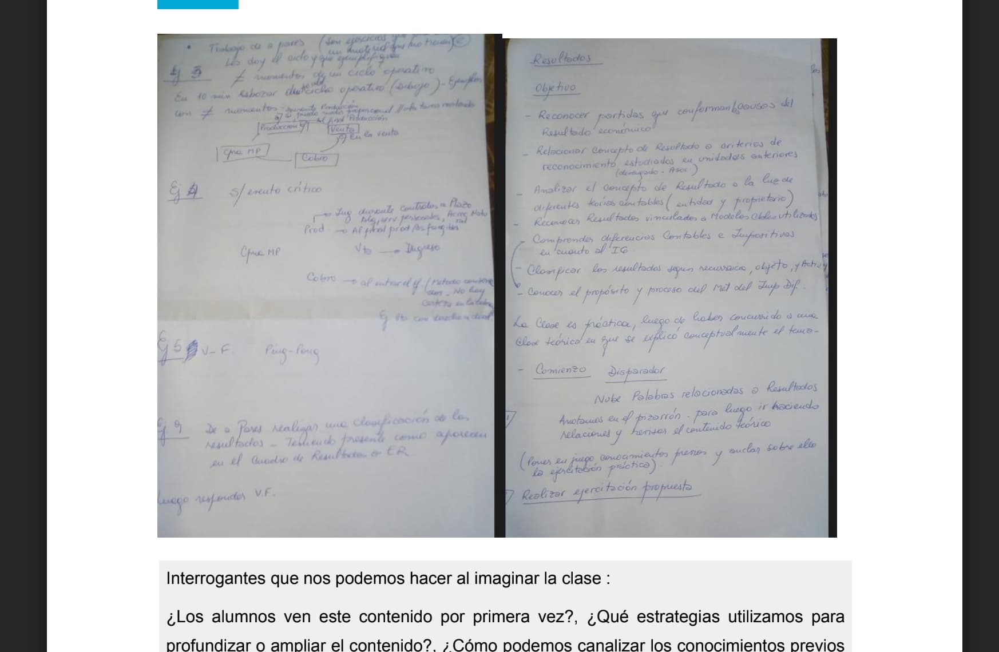

⭐ Clave
En esta etapa nos proponemos modelar, delimitar y conducir la interacción del estudiante, determinando qué opciones se le presentarán y cómo se comportará el material en cada caso.
En esta etapa nos proponemos modelar, delimitar y conducir la interacción del estudiante, determinando qué opciones se le presentarán y cómo se comportará el material en cada caso.
En este punto es importante retomar lo que planificamos en la primera etapa en relación al tipo de aprendizaje o intencionalidad didáctica del material. Para profundizar en esto les proponemos responder tres preguntas:
Actualmente abundan las herramientas para la creación digital, y prácticamente cualquier software o plataforma online permite producir experiencias hipermediales interesantes. Pero suelen estar restringidas por cuestiones comerciales o simplemente, las plataformas desaparecen y con ellas nuestros contenidos. Para esta mini-guía hicimos un gran relevamiento y luego filtramos a partir de tres criterios principales:
De las herramientas relevadas, las que creemos más valiosas son:
eXelearning (editor de materiales interactivos)
H5P (editor de materiales interactivos)
GeoGebra (editor de materiales interactivos para STEM)
Twine (editor de relatos interactivos y no-lineales)
Renpy (editor de novelas visuales interactivas)
🚀 Les proponemos visitar las páginas de cada una de las herramientas para explorar sus posibilidades.
Para modelar la interactividad puede resultar de valor ofrecer paradas de verificación de recorrido y aprendizaje. Los test de control de lectura o micro evaluaciones son herramientas valiosas para promover la exploración e interacción con el material.
Ahora bien, también es importante considerar la complejidad de las actividades para que resulten desafíos cognitivos acordes a la propuesta, evitando la frustración.
Así es como encaramos esta etapa durante el desarrollo de los dos materiales de este proyecto:
Revisando los contenidos en profundidad vimos que el índice del material: no tenía enlaces internos que permitieran saltar rápidamente a los distintos capítulos del documento, que presentaba varios enlaces a videos de youtube,

y presentaba una serie de fotografías de apuntes que no alcanzaban a leerse.

A partir de aquí, la primera decisión fue procurar que el usuario pudiera saltar de un punto a otro del material con facilidad y tener una experiencia completa de los contenidos sin la necesidad de abandonar el material. Es decir, el material debía permitir ver todos los videos y fotos en el mismo lugar y de la mejor manera posible, y debía facilitar un menú siempre visible para navegar rápidamente a las distintas secciones y subsecciones.
Se pensó sumar también algunos ejercicios simples (multiple choice, verdaderos y falsos) al finalizar cada sección como pequeñas autoevaluaciones. Este punto se dejó para una futura edición.
A partir de lo comentado, elegimos trabajar con la herramienta eXelearning. Este editor cumplía todos los requisitos aquí mencionados y además nos permitía exportar para utilizar en entornos virtuales de enseñanza (como paquete SCORM) y, sin mayor esfuerzo, como una página web autónoma (en formato HTML) con la idea (ya mencionada en los objetivos) de que material pudiese estar disponible de manera abierta por fuera del aula virtual y sin disminuir la calidad de la experiencia.
Uno de los contenidos que más se destacan visualmente en el aula Moodle de la materia es el audiovisual, a través del los cuales se desarrollan las lecciones de cada unidad mientras se comparten presentaciones multimedia de Google Slides. La duración de los videos puede clasificarse de la siguiente manera: corta (media hora o menos), mediana (más de media hora y hasta una hora) y larga (más de 1 hora). A partir de la duración de los videos, podríamos establecer alguna recomendación sobre cuántas paradas debería agregarse para ayudar al estudiante a ejercitar los conceptos que allí se presentan. Por ejemplo, cada 10 min. agregar alguna parada para repasar los conceptos más importantes.
En relación a lo anterior, creemos que la producción de videos podría aprovecharse más si se agregaran algunos de los siguientes recursos provistos por H5P:
AGREGADORES:
AUTO-EVALUACIONES:
útiles para resumir ideas principales
Preguntas verdadero/falso
Preguntas multiple choice
Preguntas simple choice
Resumen
PRESENTACIÓN DE CONTENIDO:
útiles para desarrollar contenidos extensos o establecer paradas
Imagen con puntos de acceso
Acordeón
Línea del tiempo
Tips
eXeLearning es un programa libre y de código abierto para crear contenidos educativos. En un mismo material podemos combinar texto, imágenes, recursos embebidos y actividades varias. El programa cuenta con diferentes diseños -plantillas- que se pueden elegir desde el menú e incluso permite modificarlas o crear diseños propios.
El editor funciona desde el navegador, por lo que puede usarse en todos los sistemas operativos.
Una vez finalizado el recurso podemos exportarlo en diferentes formatos:
Manual de uso: https://exelearning.net/ayuda/
Ejemplo: https://descargas.intef.es/cedec/exe_learning/Manuales/manual_exe28/
Para cerrar esta etapa, debemos poder decir claramente qué se puede hacer en el material.
Obra publicada con Licencia Creative Commons Reconocimiento Compartir igual 4.0